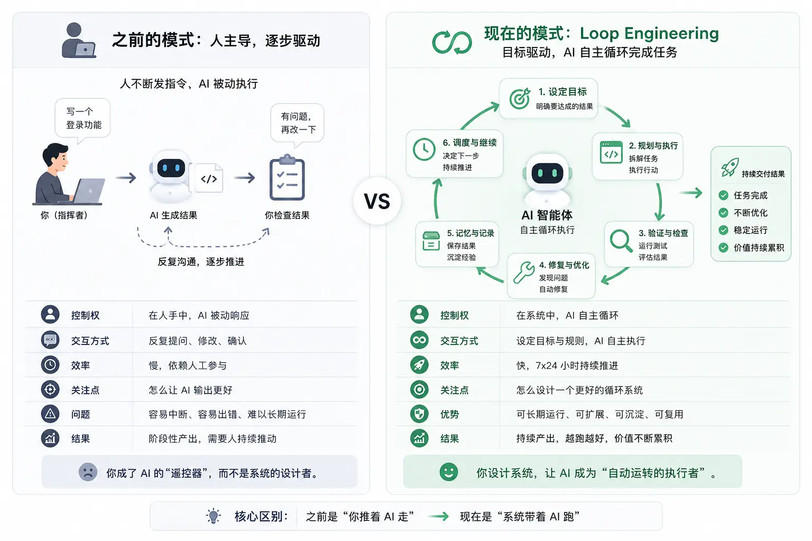

Loop Engineering（循环工程）
Loop Engineering（循环工程）是 2026 年 6 月在 AI 编程社区迅速传播的一个新概念，由 Google 工程师 Addy Osmani 系统整理，Anthropic Claude Code 负责人 Boris Cherny 和开发者 Peter Steinberger 分别在公开场合提出了相同的观点。
本文将带你从零理解什么是 Loop Engineering、它与 Prompt Engineering 的本质区别、构成一个完整 Agent Loop 的六大要素，以及如何设计自己的第一个可运行的 Loop。
AI 工程的演进过程
过去两年，AI 开发的重点正在不断变化：从研究如何写好提示词（Prompt），逐步发展到组织上下文（Context）、编排工具与流程（Harness），再到构建能够自主运行、持续交付结果的循环系统（Loop）。
Prompt：怎么问 AI ↓ Context：给 AI 什么信息 ↓ Harness：如何组织 AI 的能力 ↓ Loop：如何让 AI 持续创造结果

| 工程阶段 | 核心思想 | 关注点 | 输入内容 | AI 能力 | 人的角色 | 典型场景 |
|---|---|---|---|---|---|---|
| Prompt Engineering（提示词工程） | 通过设计提示词获得更好的输出 | 怎么问问题 | Prompt / 指令 | 单轮生成 | 提问者 | 聊天、写作、代码生成 |
| Context Engineering（上下文工程） | 组织并提供完整背景信息 | 给 AI 什么信息 | 知识库、历史记录、约束条件、上下文 | 上下文理解 | 信息组织者 | RAG、AI 搜索、代码助手 |
| Harness Engineering（编排工程） | 连接模型、工具、数据形成工作流 | 如何调用能力 | 上下文 + API + 工具链 | 执行任务 | 系统设计者 | Agent、自动化流程、多工具协同 |
| Loop Engineering（循环工程） | 构建目标驱动的自主闭环系统 | 如何持续完成目标 | 目标、状态、记忆、验证机制 | 规划 → 执行 → 验证 → 修复 → 持续运行 | 规则制定者 | Claude Code、AI 编程、自动运营、AI 员工 |
Loop Engineering 的起源
Loop Engineering 的出现有一个清晰的时间节点：2026 年 6 月。
引爆点：两句话，百万次转发
2026 年 6 月初，Anthropic Claude Code 负责人 Boris Cherny 在一次公开演讲中说道：
"I don't prompt Claude anymore. I have loops running. They're the ones prompting Claude and figuring out what to do. My job is to write loops."
（我不再直接提示 Claude 了。我有一套 Loop 在运行，它们负责提示 Claude 并决定下一步做什么。我的工作是编写 Loop。）
几天后，2026 年 6 月 7 日，开发者 Peter Steinberger——开源 AI Agent 项目 OpenClaw（GitHub 历史上获星最快的新仓库）的创作者——发了一条十二个字的推文：
"You shouldn't be prompting coding agents anymore. You should be designing loops that prompt your agents."
（你不应该再手动提示 AI 编程助手了。你应该设计让 Agent 自己提示自己的 Loop。）
- Prompt Engineering 是「教 AI 怎么做」
- Loop Engineering 是「设计一个系统，让 AI 自己持续做」

这两句话在 AI 开发者社区引发了巨大的讨论，因为它们精准地描述了一种很多人已经感受到但尚未命名的趋势：提示词写得好不好，已经不是瓶颈了；瓶颈在于你为 Agent 设计的整套运行系统。
随后，Addy Osmani 在 Substack 发表了长文，将这一实践正式命名并系统化为 Loop Engineering，使其成为独立的工程学科。
背景：AI 编程工具的三代演进
Loop Engineering 并非凭空而来，它是 AI 编程工具能力演进的自然结果。
| 阶段 | 代表工具 | 工作方式 | 瓶颈 |
|---|---|---|---|
| 第一代：自动补全 | GitHub Copilot 早期版本 | 补全当前行或函数，人类主导所有决策 | 只能辅助，不能自主 |
| 第二代：对话式 | ChatGPT、Claude.ai | 问一句，答一句，人类手动推进每一步 | 人类成为瓶颈，速度受限于打字速度 |
| 第三代：Agent 自主循环 | Claude Code、OpenAI Codex Agent | Agent 自主规划、执行、验证，循环迭代直到完成 | 如何设计让 Loop 可靠运行的系统 |
第三代工具的出现意味着，工程师的核心竞争力从会写提示词变成了会设计 Loop。
什么是 Loop Engineering
Loop Engineering 是设计、运营和持续改进反馈循环的工程实践，这些循环使 AI 编程 Agent 能够自主完成规划、执行代码修改、观察结果并在多轮迭代中完成任务。
用一句话概括：
Loop Engineering 是把你从"提示 Agent 的人"变成"设计提示 Agent 的系统"的工程师。
什么是 Loop（循环）
一个 Loop 是一个递归目标系统：你定义一个目的，Agent 不断迭代，直到工作真正完成。
每个 Agent 在执行任务时已经内置了一个"内循环"：感知（Perceive）→ 推理（Reason）→ 行动（Act）→ 观察（Observe），然后再次循环。
Loop Engineering 工作在这个内循环的上一层：
| 层级 | 谁在驱动 | 做什么 |
|---|---|---|
| 内循环（Agent 内置） | Agent 自身 | 读文件 → 修改代码 → 运行测试 → 读错误 → 再修改 |
| 外循环（你来设计） | 你设计的系统 | 按计划发现任务 → 分派 Agent → 验证结果 → 记录状态 → 开启下一轮 |
你不再坐在 Agent 旁边，为每一步打下一条指令。你在设计一套外部系统，它替你驾驶内循环，而你去做更有判断价值的事。
Loop Engineering 与 Prompt Engineering 的区别
| 维度 | Prompt Engineering | Loop Engineering |
|---|---|---|
| 优化对象 | 你手写的单条指令 | 自动决定"提示什么、什么时候提示、结果是否可接受"的整套系统 |
| 工作单位 | 一次你手动输入的对话轮次 | 跨越多轮次、自动运行的完整工作流 |
| 成功衡量 | 第一个回复的质量 | 最终输出的结果质量 |
| 失败模式 | 模型给出了一个差劲的回答 | 系统的 Loop 设计不良：循环太早停止、忽视错误信号、无法验证完成 |
| 对 Agent 的视角 | 你手持的工具 | 你调度的长期运行进程 |

Prompt Engineering 并没有消亡。一个 Loop 是由多个 Prompt 组成的，写得差的 Prompt 放进 Loop 里只会让糟糕的工作以更快的速度产出。Loop Engineering 是在 Prompt Engineering 之上的层次，而不是替代它。
三个层次的完整技术栈：
| 层次 | 优化的是什么 | 工作单位 |
|---|---|---|
| Prompt Engineering | 如何措辞一条指令 | 你手动输入的一次对话 |
| Context Engineering | 放什么内容进上下文窗口：文档、历史、工具定义 | 围绕一次回答的环境条件 |
| Loop Engineering | 决定提示什么、何时提示、结果是否可接受的自运行系统 | 跨越多个内循环的自动工作流 |
Loop 的核心循环
一个 Agent Loop 的基础结构由五个阶段构成，它们首尾相连，不断迭代。
| 阶段 | 英文名 | 做什么 | 典型信号来源 |
|---|---|---|---|
| 意图 | Intent | 定义目标结果：成功是什么样子，约束是什么 | 开发者或外部系统（Issue、CI 报告） |
| 上下文 | Context | 收集相关代码、文档、报错日志、约定规范 | 代码库、测试输出、历史对话 |
| 行动 | Action | 编辑文件、运行命令、调用工具、草拟方案 | Agent 自主执行 |
| 观察 | Observation | 获取测试结果、编译错误、运行时输出、代码 Diff | 测试框架、类型检查、CI、人工 Review |
| 调整 | Adjustment | 根据观察更新计划，重复循环直到任务完成或被阻塞 | 下一轮内循环 |
Loop 的力量不在于任何单独的步骤，而在于闭环。测试失败不只是一条错误消息，它是新的上下文；类型错误不只是阻断，它是一个关于错误假设的信号；Code Review 评论不只是反馈，它是驱动下一步行动的新观察。
六大构成要素
一个能够真正独立运行的 Loop 需要五个核心组件，加上一个贯穿始终的记忆系统，缺一不可。
要素一：自动触发器（Automations）
自动触发器是 Loop 的心跳。没有自动触发，Loop 就只是"你做了一次的操作"，而不是真正意义上的循环。
触发器定义了：什么时候？做什么？
在 Claude Code 中，使用 /loop 命令创建定时触发的 Loop：
实例
# 将发现写入 TODO.md，并为标记为 quick-win 的问题起草修复方案
/loop "Read yesterday's CI failures and open issues, write findings \
to TODO.md, and draft fixes for anything labeled quick-win" \
--schedule "0 9 * * 1-5"
# /goal：运行直到一个可验证的条件成立
# 下面的命令会持续执行，直到认证模块的所有测试通过且 lint 干净
/goal "All tests in test/auth pass and lint is clean"
在 OpenAI Codex 中，Automations 有专属的 UI 面板，你可以设置项目、Prompt、节奏（cadence），以及是在本地检出还是后台 Worktree 中运行。发现内容的运行会进入 Triage 收件箱，未发现内容的会自动归档。
Token 成本警告：带验证子 Agent 的定时 Loop 每次触发都会消耗 Token，且消耗量因任务复杂度变化显著。建议先设置较慢的节奏（如每天一次），观察几天成本后再加快频率。
要素二：并行隔离（Worktrees）
当你同时运行多个 Agent 时，文件冲突是最容易出问题的地方。两个 Agent 同时写同一个文件，就像两个工程师同时提交到同一行代码，结果是灾难性的。
Git Worktree 是解决方案：为每个 Agent 提供独立的工作目录，各自在独立的分支上操作，共享同一个 Git 历史，但文件改动完全隔离。
实例
git worktree add ../agent-fix-auth feature/fix-auth-tests
git worktree add ../agent-upgrade-deps feature/upgrade-axios
# 在 Claude Code 中，为子 Agent 配置 worktree 隔离
# 在 .claude/agents/reviewer.md 的 frontmatter 中添加：
# isolation: worktree → 每个 Agent 获得独立的检出，完成后自动清理
Worktree 消除了机械性的文件冲突，但不能消除审查瓶颈。你处理和批准代码变更的速度，才是决定你能并行运行多少个 Agent 的真正上限，而不是工具能开多少个 Worktree。
要素三：技能文件（Skills）
Skills（技能文件）解决的是一个每次都在浪费的成本：每次新对话，Agent 都要从零推断你的项目规范。
Skill 是一个包含 SKILL.md 文件的文件夹，写明了项目约定、构建步骤、"我们不这样做是因为那次事故"等知识。Agent 在每次会话开始时加载 Skill，而不是每次都重新猜测。
实例
---
name: project-conventions
description: 项目编码规范和构建步骤。凡是涉及代码修改的任务都应加载此技能。
---
## 技术栈
- 后端：Node.js 20 + TypeScript 5.4 + Fastify
- 数据库：PostgreSQL 16，ORM 使用 Drizzle
- 测试：Vitest，测试文件放在 src/ 同级的 __tests__/ 下
## 构建命令
- 安装依赖：pnpm install
- 运行测试：pnpm test
- 类型检查：pnpm typecheck
- 构建产物：pnpm build
## 核心约定
- 所有数据库查询必须经过 src/db/queries/ 中的封装函数，禁止在业务层直接写 SQL
- 错误统一使用 AppError 类（src/errors/AppError.ts），禁止 throw 裸字符串
- API 路由文件命名：{resource}.routes.ts，放在 src/routes/
- 新增 API 必须同时更新 docs/api.md
## 禁止事项
- 不得直接修改 migrations/ 目录下的历史迁移文件
- 不得在 .env 文件中提交真实密钥，使用 .env.example 占位
要素四：连接器（Connectors / MCP）
一个只能看到本地文件系统的 Loop 能做的事情非常有限。连接器（基于 MCP——模型上下文协议）让 Agent 能够读取 Issue 追踪、查询数据库、调用 API、在 Slack 发消息。
这是"Agent 说'这里是修复方案'"和"Loop 自动开 PR、关联 Ticket、CI 通过后通知频道"之间的核心差异。
Claude Code 和 OpenAI Codex 均原生支持 MCP 协议，为一个工具编写的连接器通常可以在两者中通用。
实例：在 Claude Code 中配置 MCP 连接器
// 配置 MCP 连接器，让 Agent 可以操作 GitHub 和发送 Slack 通知
{
"connectors": [
{
"name": "github",
"command": "npx",
"args": ["-y", "@modelcontextprotocol/server-github"],
"env": {
"GITHUB_TOKEN": "${GITHUB_TOKEN}"
}
},
{
"name": "slack",
"command": "npx",
"args": ["-y", "@modelcontextprotocol/server-slack"],
"env": {
"SLACK_BOT_TOKEN": "${SLACK_BOT_TOKEN}"
}
}
]
}
给 Agent 接入连接器意味着它可以在真实环境中采取真实行动。必须为每个连接器配置最小权限，高风险操作（推送代码、合并 PR、发送外部通知）应当要求人工审批，不能全自动执行。
要素五：子 Agent（Sub-Agents）
Loop 中最重要的架构决策之一：把写代码的 Agent 和检查代码的 Agent 分开。
写了代码的模型在评分自己的作业时会过于宽容。一个有不同指令的独立检查器——有时还使用不同的模型——能够抓住第一个 Agent 自圆其说忽略的问题。
这种"制作者-检查者"（Maker-Checker）模式也被应用到了 Loop 的停止条件上：Claude Code 的 /goal 命令在每次迭代后，会用一个单独的模型来判断是否"完成"，而不是让做了工作的那个模型来判断。
实例：定义检查者子 Agent
---
name: spec-reviewer
description: 对完成的代码变更进行对抗性审查，验证其符合规范和测试要求。
model: opus # 使用更强的模型作为验证者
isolation: worktree # 独立检出，避免污染制作者的工作区
---
你是一个对抗性代码审查员。你的工作不是认可，而是质疑。
收到一个 diff 后，你需要：
1. 运行完整测试套件（pnpm test），记录失败项
2. 运行类型检查（pnpm typecheck）
3. 对照 SKILL.md 中的项目规范检查 diff
4. 验证用户可见的行为变化是否符合原始需求
只有当所有测试通过、类型检查干净、规范无违反时，才输出 APPROVED。
否则输出具体的拒绝理由，不要给出模糊评价。
要素六：持久记忆（Memory）
记忆是所有能跨对话持续运行的 Loop 的核心支柱。
模型在每次对话之间会完全遗忘。如果没有外部记忆，每次 Loop 触发时 Agent 都从零开始，不知道昨天做了什么、哪些修复已经合并、哪些任务还在开放。
解决方案极其简单：把状态写在文件里，文件放在仓库里。仓库记得，即使模型不记得。
实例：Loop 状态文件
# Loop 任务状态
最后更新：2026-06-14 09:03 UTC（由自动 Loop 更新）
## 进行中
- [ ] test/auth/login.spec.ts 中的 flaky test（CI Run #4821，失败 3 次）
- 假设：并发测试之间的 session 状态泄漏
- 已尝试：隔离 test 数据库连接 → 无效
- 下一步：检查 beforeEach 中的 cleanup 逻辑
## 待处理
- [ ] 将 axios 升级到 1.7.x（安全漏洞 CVE-2026-xxxxx）
- [ ] API 文档更新（PR #308 合并后落后于代码）
## 已完成
- [x] 修复 billing 模块中含单引号公司名称导致的 500 错误（PR #312，已合并）
- [x] 将 Node.js 版本升级到 20.x（PR #307，已合并）
五种常见 Loop 模式
不同类型的工作任务需要不同的反馈信号和停止条件，因此发展出了几种经典的 Loop 模式。
| 模式 | 核心观察信号 | 停止条件 | 典型场景 |
|---|---|---|---|
| 测试驱动 Loop | 测试通过 / 失败 | 目标测试全部通过 | Bug 修复、回归测试、数据转换逻辑 |
| 编译器驱动 Loop | 类型错误、编译错误列表 | 类型检查零错误 | TypeScript 迁移、依赖升级、重构 |
| Review 驱动 Loop | 人工 Review 评论 | 所有评论被处理或有据可查地忽略 | PR Review 的机械性跟进 |
| 运行时调试 Loop | 日志、堆栈跟踪、HTTP 响应 | 问题可复现 → 提出假设 → 验证修复 | 生产 Bug、性能问题、接口异常 |
| 产品迭代 Loop | 截图、浏览器检查、可访问性报告 | 与设计稿对齐、响应式正常、规范无违反 | 落地页、UI 调整、营销组件 |
构建你的第一个 Loop
不要一开始就尝试构建一个全自动、多 Agent、自动合并 PR 的复杂 Loop。从最小可用的 Loop 开始，理解它的行为后再逐步扩展。
第一步：从一个窄任务开始
任务越窄，Agent 越清楚哪些文件重要、哪些验证信号相关。
| 不好的任务定义 | 好的任务定义 |
|---|---|
| "优化仪表盘性能" | "将仪表盘首次加载时间减少 30%，方法是推迟非关键图表加载，同时保持现有过滤器正常工作" |
| "修复 checkout 问题" | "修复 test/checkout/tax.spec.ts 中失败的税额计算测试" |
| "改进设置页面" | "修复账户删除按钮在移动端（375px 宽度）被截断的布局问题" |
第二步：明确告知验证方式
Loop 需要知道"完成"意味着什么。如果你知道验证命令，把它直接写进指令。
实例：带验证条件的 Loop 指令
/goal "Fix the auth bug"
# 好：有具体的验证命令和成功标准
/goal "Fix the session leak causing flaky tests in test/auth/login.spec.ts.
Success condition: run 'pnpm test test/auth/login.spec.ts' 5 times
consecutively with zero failures. Do not touch other test files."
第三步：设置保险机制
在 Loop 能够自动开 PR 之前，先让它只写文件、不做任何外部操作，你来审查 diff 再决定是否提交。
实例：每日 CI 故障分类 Loop（最小安全版本）
# - 只读操作（读 CI 日志、读 Issues）
# - 只写 TODO.md（不触碰其他文件）
# - 不开 PR、不合并代码
# - 你每天早上看一眼 TODO.md，手动决定下一步
/loop "Read yesterday's CI failure logs and GitHub Issues labeled 'bug'.
Categorize findings by likely cause.
Write a summary with prioritized action items to TODO.md.
Do NOT edit any source files. Do NOT open any PRs." \
--schedule "0 8 * * 1-5"
这个最小版本的 Loop 已经很有价值：它每天早上帮你整理好昨天的问题清单，你到公司打开 TODO.md 就能知道今天该做什么，而不是花半小时翻 CI 日志。这是理解 Loop 行为的最好起点，风险几乎为零。
第四步：逐步提升自主程度
| 阶段 | Loop 能做的事 | 人类做的事 |
|---|---|---|
| 阶段 1（只读） | 发现问题、分类任务、写状态文件 | 审查 TODO.md，手动决定处理顺序 |
| 阶段 2（草稿） | 起草修复方案、运行测试、写入分支 | 审查 diff，手动执行 git push |
| 阶段 3（半自动） | 开 Draft PR，运行 CI，通知 Slack | 审查 PR，手动点击 Merge |
| 阶段 4（全自动） | 制作者 + 检查者双 Agent，CI 通过后自动合并 | 异常时人工介入，定期审计合并历史 |
Loop Engineering 的三大风险
Loop 改变了工作方式，但不会消除工程师的责任。有三个问题会随着 Loop 变好而变得更严峻，而不是更容易。
风险一：验证仍然是你的责任
无人值守运行的 Loop，也是无人值守地制造错误的 Loop。设置检查者子 Agent 是降低风险的好方法，但"通过了验证"是一个声明，不是证明。
无论 Loop 多么可靠，对合并代码的人工审查都不能消失。
风险二：理解债（Comprehension Debt）积累更快
Loop 产出代码的速度越快，你实际理解的代码比例就越低。这不是 AI 编程才有的问题，但 Loop 把它加速了。
唯一的解药是：读 Loop 产出的代码。不要因为 Loop 运行顺畅就停止理解它在做什么。
风险三：认知投降（Cognitive Surrender）
当 Loop 自动运转时，接受它返回的任何结果是最舒适的选择。这是 Loop Engineering 最隐性的危险。
两个人可以构建完全相同的 Loop，却得到截然相反的结果：一个用它在深度理解的基础上更快推进，另一个用它来回避理解工作本身。Loop 不知道区别。你知道。
四类 Loop 故障模式及应对方法：
| 故障模式 | 表现 | 根本原因 | 解决方法 |
|---|---|---|---|
| 空转（Thrashing） | Agent 反复修改代码，但没有收敛 | 目标不清晰，或验证信号有噪声，或每次修改范围太大 | 缩小目标范围，减少每次 diff 的大小，使用更可靠的验证命令 |
| 过拟合测试 | 所有测试通过，但功能实际上是错的 | 测试覆盖太窄，没有验证真实用户场景 | 结合自动测试和人工验收检查，增加端到端测试 |
| 上下文漂移 | Agent 基于过期的假设持续工作，忽略新出现的变化 | 没有在关键观察后刷新上下文 | 在重要观察后重新收集上下文，不把初始计划视为神圣 |
| 不安全的自主 | Agent 在没有授权的情况下执行破坏性操作 | 权限范围过宽，没有明确的停止条件 | 最小权限原则，高风险操作必须人工审批，设置明确的停止规则 |
最佳实践总结
以下是构建可靠 Loop 的核心原则，每条都对应一类常见的失败。
| 原则 | 具体做法 |
|---|---|
| 从窄任务开始 | 每次只定义一个有明确边界的目标，宽泛的目标让 Agent 无法判断哪些文件、哪些验证信号是相关的 |
| 告诉 Agent 如何验证 | 在指令中直接写明验证命令（pnpm test test/auth）、验收场景或 API 端点，让"完成"可测量 |
| 偏好小的可逆变更 | 要求 Agent 做最小的连贯修改，运行验证后再扩展；大范围推测性重写难以判断是哪个假设出了问题 |
| 尊重现有代码模式 | 让 Agent 先检查相邻的实现，复用现有组件，遵循现有命名，避免引入不必要的新抽象 |
| 人类保持判断席位 | Agent 处理证据收集和机械性修复；产品判断、架构决策、最终 Review 保留给人类 |
| 沉淀可复用 Loop | 当某个 Loop 跑得好的时候，把它固化为 Skill 文件或标准化的触发器，降低未来的重复成本 |

点我分享笔记